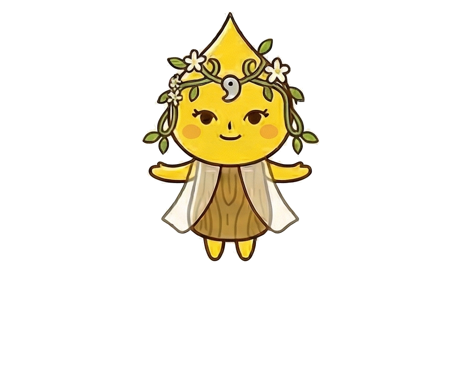

ティラスは、パワースポットの神聖なエネルギーが極限まで高まり、ポトリと滴り落ちた「光の雫（Tear）」から生まれました。
その誕生を祝福するように、周囲の植物たちが自然と絡み合って編み上げられたのが、頭に乗せている「光のティアラ（Tiara）」です。
太陽の神様「アマテラス」のような温かく強大なパワーを宿したその雫は、冠を戴くことで姿を持ち、ノッティや仲間たちの行く先を明るく「照らす」存在として、いつしか『ティラス』と呼ばれるようになりました。
これらが重なり合うことで、神秘的でありながら親しみやすい「ティラス」という名前が完成しました。